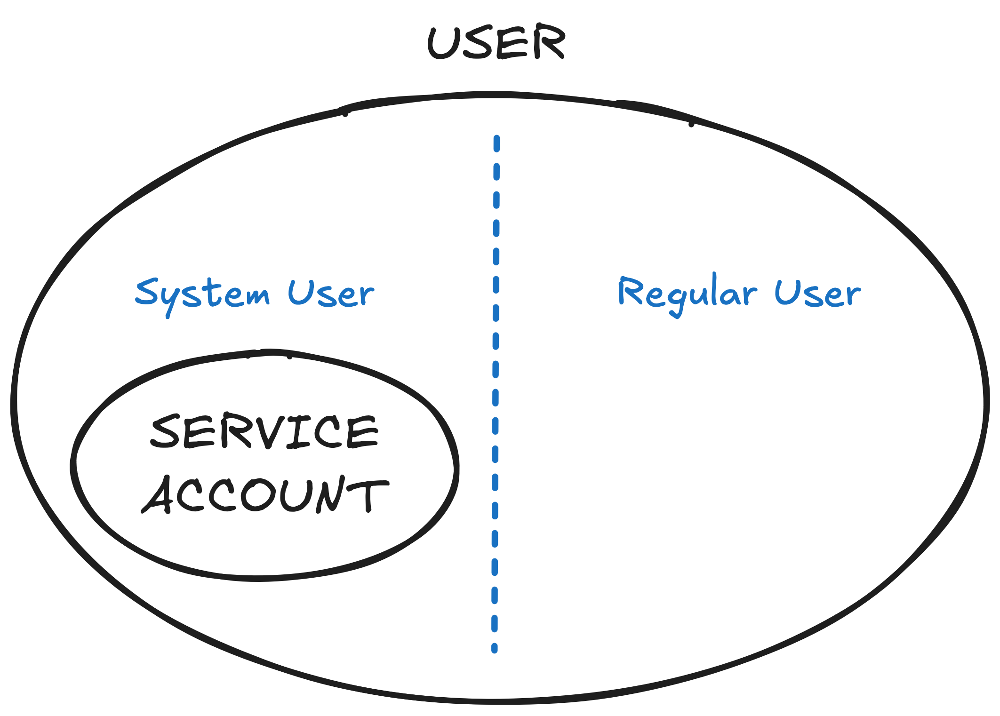

3. Authentication and Authorization
1. Users & Groups¶
以下这些OC Resources与 authentication & authorization 有关：
identiy: 身份，keeps a record of successful authentication attempts from a specific user and identity provider (IDP).role: it defines set of allowed API operations foruser,grouporserviceaccountuser: credential for external entities (user,external system), it interacts with API server.serviceaccount/sa: credential forapplications,servicesgroup: set ofuser
Users¶
Identity 是外部身份的表示¶
Identity 代表的是 OpenShift 外部认证源（如 OAuth、LDAP、GitHub、Google 等）中某个用户的登录凭据。 一个 Identity 通常由以下两部分组成：
providerName（认证提供者名称，如 github、ldap）providerUserName（在该提供者下的用户名）
合起来构成一个唯一的 Identity，例如：github:alice
identity
> oc get identity
NAME IDP NAME IDP USER NAME USER NAME USER UID
LDAP:new_admin LDAP new_admin new_admin 489c7402-d318-4805-b91d-44d786a92fc1
GitHub:developer GitHub developer developer 8dbae772-1dd4-4242-b2b4-955b005d9022
NAME: identity 的名字，由 OpenShift 自动生成IDP NAME: identity 提供者，表示该用户通过哪个认证系统登录（如 github、ldap、htpasswd）。IDP USER NAME: 用户在 IDP 认证系统中的唯一标识。USER NAME: 该 identity 在 OpenShift 中映射到的user名USER UID: 该 identity 在 OpenShift 中映射到的用户的唯一标识符（UID）。
User 是 OpenShift 内部的用户对象¶
User 是 OpenShift 中用于进行权限控制（RBAC）的实体，它代表一个登录用户，并与权限（如 RoleBinding）相关联。在 OpenShift 内部进行权限分配、资源访问等操作的基础单位。
User 与 Identity 的关系¶
一个 User 可以对应 多个 Identity(1:n)，比如同一个人可以用 GitHub 登录、也可以用 LDAP 登录，系统可以将这两个 Identity 绑定到同一个 User。比如：
User: johnDoe ---> Identity: ldap:johnDoe
User: johnDoe ---> Identity: github:johnDoe
Types¶

User
There are 2 User types:
- Regular User: they are represented as
userresource - System User: Many system users are created automatically when the infrastructure is defined, for example, cluster administrator (with access to everything), a per-node user, users for routers and registries, and various others.
Name convention: start with asystem:prefix, such as:system:adminsystem:openshift-registrysystem:node:node1.example.com
ServiceAccount
ServiceAccount one type of System User that associated with projects
- Some created automatically during project creation
- Admin can create more
sato grant extra priviledges to Wordloads - By default,
sahas no role - Name convention: start with a
system:serviceaccount:[Namespace]:prefix, such as:system:serviceaccount:default:deployersystem:serviceaccount:accounting:builder
User vs ServiceAccount
⚠️ serviceaccount can be considered as ONE TYPE of user
User |
ServiceAccount |
|
|---|---|---|
| 使用者 | 一个人，或一个外部系统（例如 CI/CD 工具） | 应用程序，或服务 |
| 管理方式 | - 用户的认证信息存储在 外部系统（如身份提供商），而不是 OpenShift 内部。 - OpenShift 支持多种用户认证方式 |
- 是集群中的资源，可以通过 YAML 或 CLI 管理。 - 每个命名空间都有默认的 default ServiceAccount |
| 适用场景 | - 开发者、管理员等直接操作 OpenShift 集群的用户。 - 通过 CLI、Web 控制台或 API 与集群交互。 - 外部集成系统需要通过用户身份进行认证（如 OAuth）。 |
- 用于 Pod 的运行时身份，Pod 使用 ServiceAccount 与集群交互。- 自动分配 Token，用于 API 访问的身份认证。 - 应用程序需要读取 ConfigMap、Secrets 等集群资源时 |
Groups¶
# create Group
oc adm groups new my-group
# add multiple Users to a Group
oc adm groups add-users my-group user1 user2
# Remove user1 and user2 from my-group
oc adm groups remove-users my-group user1 user2
常见 系统级用户组¶
-
认证相关的用户组
组名 说明 system:authenticated所有已认证用户（包括 OAuth、X.509 证书、Kubeconfig 认证的用户） system:authenticated:oauth所有通过 OAuth 认证的用户（即使用 oc login 通过 OAuth 登录的用户） system:unauthenticated所有未认证的用户（如匿名 API 访问） -
角色相关的用户组
组名 说明 system:cluster-admins集群管理员组，拥有 最高权限，可以管理整个集群 system:masters集群控制组，管理 OpenShift 控制平面（Master 节点） system:discovery所有用户 默认加入，可访问 oc get 相关的公开 API system:scope-impersonation允许用户模拟 OAuth 作用域（Scope） -
项目（Namespace）管理相关的用户组
组名 说明 system:cluster-readers只读访问集群资源，不能修改 system:basic-users基本用户组，可以使用 oc whoami 查询自己的用户信息 system:build-strategists构建策略管理员，管理构建策略 system:image-builders允许在 OpenShift 内 构建镜像 system:image-pullers允许从 Registry 拉取镜像（通常绑定到 Namespace） system:image-pushers允许向 Registry 推送镜像 system:registryOpenShift 内部 镜像仓库服务 -
特殊组
组名 说明 system:nodes所有 OpenShift Worker 节点，用于 kubelet 访问 API system:node-proxierOpenShift 网络代理（kube-proxy） 访问 API system:routerOpenShift Router 组件，负责 Ingress/Route 路由 system:deployer负责 部署 Pod，通常用于 DeploymentConfig system:serviceaccounts所有 ServiceAccount 账户（用于 Pod 访问 API）
-------¶
2. Authentication¶
assigns the cluster-admin role to the student user so that the student user can do anything in the cluster:
oc adm policy add-cluster-role-to-user cluster-admin student
A newly installed OpenShift cluster provides two ways to authenticate API requests with cluster administrator privileges：
- X.509 客户端证书
- OAuth 访问令牌
1. X.509 客户端证书¶
X.509 client certificates更为静态，通常用于已经依赖证书的安全环境中. OpenShift 默认使用 X.509 证书 来验证 API 服务器之间的通信，以及 Kubernetes 组件（如 kubelet、oc CLI）访问 API Server。
kubeconfig
During installation, the OpenShift installer creates a unique kubeconfig file. The file contains specific details and parameters for the CLI to connect a client to the correct API server, including an X.509 certificate:
apiVersion: v1
kind: Config
clusters:
- name: my-cluster
cluster:
server: https://api.my-cluster.com:6443
certificate-authority: /path/to/ca.crt # CA 证书（用于验证 API 服务器）
users:
- name: admin
user:
client-certificate: /path/to/admin.crt # 客户端证书（X.509）
client-key: /path/to/admin.key # 客户端私钥
contexts:
- name: my-context
context:
cluster: my-cluster
user: admin
current-context: my-context
# The installation logs provide the location of the kubeconfig file like this:
INFO Run 'export KUBECONFIG=/root/auth/kubeconfig' to manage the cluster with 'oc'.
# To use the `kubeconfig` file to authenticate oc commands, do this:
export KUBECONFIG=/home/user/auth/kubeconfig
Note
OpenShift 内部使用了多组 X.509 证书，每组证书承担不同角色，统一保障整个集群的安全通信与认证机制。比如：
｜用途 ｜ 描述｜ ｜:- ｜ :-｜ ｜API Server 通信加密 ｜ 提供 Kubernetes API 的 HTTPS 接口所需的 TLS 证书。｜ ｜Etcd 通信加密 ｜ 控制平面组件与 etcd 通信使用的证书，保证数据一致性和安全性。｜ ｜集群组件身份认证 ｜ 组件之间（如 kubelet 和 API Server）的相互身份验证。｜ ｜Ingress（路由）证书 ｜ 终端用户访问服务（通过路由）时的 TLS 证书。｜ ｜Service Serving Certificates ｜ 用于服务内部通信（如 pod 间）使用的 TLS 证书｜
2. OAuth 访问令牌¶
OAuth access tokens更加灵活，适用于动态、可扩展的访问控制场景. 默认用于用户身份验证，支持多种 OAuth 身份提供者：
- 内置身份提供者：HTPasswd、LDAP、Basic Auth、Keystone
- 外部 OAuth 提供者：GitHub、GitLab、Google、OpenID Connect（OIDC）
Info
After installation completes, OpenShift creates：
- Virtual user:
kubeadmin - Password: 存在 secret
kubeadmin（Namespacekube-system）里
# The installation logs provide the kubeadmin credentials like this:
...output omitted...
INFO The cluster is ready when 'oc login -u kubeadmin -p shdU_trbi_6ucX_edbu_aqop' # 生成 `kubeadmin` 用户和它的**OAuth access token**.
...output omitted...
INFO Access the OpenShift web-console here:
https://console-openshift-console.apps.ocp4.example.com
INFO Login to the console with user: kubeadmin, password: shdU_trbi_6ucX_edbu_aqop
CLIs¶
| Command | Description |
|---|---|
oc config view |
Show merged kubeconfig settings,即查看kubeconfig文件中的内容 |
Note
OpenShift 支持 X.509 和 OAuth：
- X.509 主要用于 API 访问（ServiceAccount 证书）和自动化工具
- OAuth 主要用于 用户登录（默认使用 OAuthServer） - Web 控制台 /
oc login
你可以使用 oc login 命令通过两种方式认证：
# 通过 X.509 证书登录（通常用于自动化）
oc login --server=https://openshift.example.com --certificate-authority=/path/to/ca.crt
# 通过 OAuth 登录（开发者 和 集群管理者常用的登陆方式）
oc login --server=https://openshift.example.com --token=YOUR_OAUTH_TOKEN
Note
无论是哪种方法，都依赖于身份提供者 / Identity Providers来验证用户的身份。 身份提供者（IdP）是这两种认证方法的核心，负责验证用户的身份后，颁发认证凭证（OAuth access tokens或X.509 client certificates）
3. Configure Identity Providers（IdP）¶
身份提供者（IdP）是给user提供身份的工具。The OpenShift OAuth server can be configured to use many identity providers. The most common ones:
1.HTPasswd¶

HTPasswd is a simple authentication mechanism that uses an Apache-style .htpasswd file to store user credentials. It validates usernames and passwords against a secret that stores credentials that are generated by using the htpasswd command. 过程很简单，只需用htpasswd工具生成文件，用文件生成secret，再修改oauth以使用该secret即可，
1. Create HTPasswd File¶
# Create the htpasswd file
# -> the password `redhat123` will be hashed with the MD5 algorithm
htpasswd -cBb /tmp/htpasswd student redhat123
# Update credential
# ⚠️ 密码可以用 '' 以防万一里面有特殊字符
htpasswd -b /tmp/htpasswd student 'redhat999'
# Add new credential
htpasswd -b /tmp/htpasswd dev 'rh123'
# delete - only the USERNAME, no PW needed
htpasswd -D /tmp/htpasswd student
htpasswd flags
-c: Create a new password file. This flag overwrites the existing file if it already exists.-B: Use bcrypt encryption for hashing the password. Bcrypt is a secure and computationally expensive algorithm, making it a strong choice for password hashing.
-> If not, then use default MD5 hashing algorithm
-> 所以-B加不加都行-b: Batch mode. Allows you to pass the password directly on the command line, rather than being prompted interactively.-DDelete user
举例：查看htpasswd文件
> cat ~/DO280/labs/auth-providers/htpasswd
new_admin:$2y$05$qQaFbpx4hbf4uZe.SMLSduTN8uN4DNJMJ4jE5zXDA57WrTRlpu2QS
new_developer:$apr1$S0TxtLXl$QSRfBIufYP39pKNsIg/nD1
2. Create(update) secret¶
Create(update) secret from the HTPasswd File. 注意所用的Namespace！
# Creating OC Secret with HTPasswd credential:
# ⚠️⚠️⚠️ After `--from-file`, prefix `htpasswd=` is needed!
oc create secret generic htpasswd-secret \
--from-file htpasswd=/tmp/htpasswd \
-n openshift-config
# Updating the OC HTPasswd Secret
oc set data secret/htpasswd-secret \
--from-file htpasswd=/tmp/htpasswd \
-n openshift-config
extract from secret
# Extracting Secret to a file that locates under directory /tmp/
oc extract secret/htpasswd-secret -n openshift-config \
--to /tmp/htpasswd --confirm
# Extracting & print the secret
oc extract secret/htpasswd-secret -n openshift-config \
--to -
delete user
# 1. delete user data in the file
htpasswd -D /tmp/htpasswd manager
# 2. update the OC secret
oc set data secret/htpasswd-secret \
--from-file htpasswd=/tmp/htpasswd -n openshift-config
# 3. ACTUALLY delete USER resource (named `manager` in this case)
oc delete user manager
# 4. ACTUALLY delete IDENTITY resources
# -> `my_htpasswd_provider` is the name of the `identityProviders` that we defined in the OAuth
oc get identities | grep manager
oc delete identity my_htpasswd_provider:manager
user VS identity
user:identity = 1:n
Example: A user can authenticate through both an LDAP account and a GitHub account, resulting in two identity objects linked to the same user.
3. [Optional] Assign role to the user¶
[student@workstation ~]$ oc adm policy add-cluster-role-to-user \
cluster-admin new_admin
Warning: User 'new_admin' not found
clusterrole.rbac.authorization.k8s.io/cluster-admin added: "new_admin"
4. Configuring the OAuth Custom Resource¶
To use the HTPasswd identity provider, the OAuth custom resource must be edited to add an entry to the .spec.identityProviders array using
oc edit oauth <oauth-name>
apiVersion: config.openshift.io/v1
kind: OAuth
metadata:
name: cluster
spec:
identityProviders:
- name: my_htpasswd_provider # name of this IdentityProvider, you can customize it
mappingMethod: claim
type: HTPasswd
htpasswd:
fileData:
name: htpasswd-secret
alternative
也可以先把 oauth 资源保存成 yaml 文件，再进行修改。
oc get oauth cluster -o yaml > oauth.yaml
oc replace -f oauth.yaml
UI Console
也可以通过UI修改： Administration > Cluster Settings > Configuration > Oauth
oc replace VS oc apply
Some resources have immutable fields that apply won't let you change. For example, a deployment cannot have its selectors changed. oc replace can be used in these situations.
oc apply -f xxx.yamlactually does a diff and updates the resource with a patch of the changes.oc replace -f xxx.yamlwill submit the full entire spec of the resource, as an atomic action.
namespace openshift-config
openshift-config namespace is used to store global configuration data for the cluster, including authentication configurations. 这里，我们用来储存有用户名+密码的secret
namespace openshift-authentication
openshift-authentication namespace is responsible for running the authentication services. 我们通过oc get oauth cluster修改了配置后，可以通过检查openshift-authentication 下pod是否完成重启，来确定oauth中的修改是否已经被应用
⚠️ 如果在openshift-config中的secret被修改，openshift-authentication中的pod也会被重启！
2.Keystone¶
Enables shared authentication with an OpenStack Keystone v3 server.
3.LDAP¶
Configures the LDAP identity provider to validate usernames and passwords against an LDAPv3 server, by using simple bind authentication.
4.GitHub or GitHub Enterprise¶
Configures a GitHub identity provider to validate usernames and passwords against GitHub or the GitHub Enterprise OAuth authentication server.
5.OpenID Connect¶
Integrates with an OpenID Connect identity provider by using an Authorization Code Flow.
-------¶
4. Authorization¶
Authorization with RBAC¶
Role-based access control (RBAC) is a technique for managing access to resources in a computer system. RBAC determines whether a user can perform certain actions within the cluster or project. There are 2 RBAC levels:
- Cluster RBAC: Roles and bindings that apply across all projects.
- Local RBAC: Roles and bindings that are scoped to a given project. Local role bindings can reference both cluster and local roles.
👉 See more illustration here
RBAC Object¶
- Rule: Allowed actions for objects or groups of objects.
- Role: Sets of rules. Users and groups can be associated with multiple roles.
- Binding: Assignment of users or groups to a role.
CLIs¶
Cluster-wide:
| CLI | |
|---|---|
oc adm policy add-cluster-role-to-user [RoleName] [UserName] |
To change a regular user to a cluster administrator(cluster-admin role) 即创建一个 clusterrolebindings |
--rolebinding-name [RoleBindingName]可为rolebinding 命名 |
|
oc adm policy remove-cluster-role-from-user [RoleName] [UserName] |
To change a cluster administrator(cluster-admin role) to a regular user 即删除一个 clusterrolebindings |
oc adm policy who-can delete user |
to determine which user can perform what(delete user in this case) |
oc adm groups new [GroupName] |
to add new group to cluster |
oc adm groups add-users [GroupName] [UserName] |
to add user to a group |
$ oc adm policy remove-cluster-role-from-group [RoleName] [GroupName] |
to remove role from a group 即删除一个 clusterrolebindings |
rolebinding
rolebinding 可用于一下这两种情况：
- role -- rolebinding -- group
- role -- rolebinding -- user
Namespace-specific:
| CLI | |
|---|---|
oc policy add-role-to-user [RoleName] [UserName] -n [ProjectName] |
role & cluster role
- local role： use
add-role-to-user记得一般来说都要加-n [ProjectName] - cluster role： use
add-cluster-role-to-user
Default Clusterroles
Here are some important default Clusterroles:
| Default Clusterroles（Role） | Description |
|---|---|
| ------ 主要管理员角色 ------ | |
cluster-admin |
Cluster-wide (global). 最高权限，拥有整个集群的管理权限，包括所有资源和 API。 |
admin |
Namespace-specific (local to a namespace). Users with this role can manage all project resources, including granting access to other users to access the project. 为了给 user 某个project的admin角色，需要做的是： 1.用admin身份创建该项目 2.使用该项目 ⚠️只要是ns-specific的，都要这样 3. oc adm policy add-cluster-role-to-user admin <username> |
edit |
允许在项目内创建、修改资源，但 不能管理 RBAC（角色、角色绑定）， limit ranges 和 quotas等资源，也不能决定谁有权访问当前项目 |
view |
只读访问，允许查看项目中的资源，但不能修改或创建资源。 |
| ------ OpenShift 特有角色 ------ | |
self-provisioner |
Users with this role can create their own projects. 允许用户创建自己的项目。self-provisioner>basic-user |
basic-user |
Users with this role have read access to the project. 允许用户查看自己的信息（如 oc whoami）。 |
cluster-status |
Users with this role can access cluster status information. |
cluster-reader |
Users with this role can access or view most of the objects but cannot modify them. |
⚠️ 这两个命令语法上都对，但是scope不一样！
# ONLY view resource in namespace!
oc policy add-role-to-group view qa -n <namespace>
# view resources across the entire cluster!!
oc policy add-cluster-role-to-group view qa
练习纠错记录¶
要求：
As the new_admin user, prevent users from creating projects in the cluster. --》这里要求你先以new_admin的user身份登陆，然后再阻止所有用户创建项目的能力
错误答案：
oc login -u new_admin -p new_password
oc adm policy remove-cluster-role-from-user self-provisioner new_developer
正确答案：
oc login -u new_admin -p new_password
oc adm policy remove-cluster-role-from-group self-provisioner system:authenticated:oauth
解释
正确答案确保 所有用户 都不能创建项目，错误答案只确保 用户new_developer 不能创建项目
self-provisioner是 OpenShift 中的一个默认clusterrole，该角色赋予用户创建新项目（即 namespace）的权限。system:authenticated:oauth是一个包含所有通过 OAuth 认证的用户的组。换句话说，当用户通过 OAuth 登录到 OpenShift 集群时，他们会自动成为这个组的一员。
另外，错误答案会报错：这是因为self-provisioner这个角色 不是直接分配给用户new_developer，而是分配给 system:authenticated:oauth 组中的所有用户，所以没有直接的rolebinding，不能remove！
error: unable to find target [new_developer]
oc get clusterrolebinding self-provisioner
Other CLIs¶
| Default Clusterroles | Description |
|---|---|
MANAGER_PASSWD="$(openssl rand -hex 15)" |
use openssl to generate random pw |
echo "xxx" | base64 --decode |
decode base64-string |
| MD5-string can NOT be decoded! |